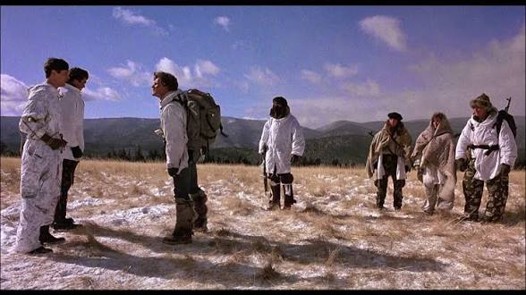

RED DAWN (1984) — CERTIFIED MGC XF-44

🏛 MGC LOWER COURT OF APPEALS
- ASSET TITLE: Red Dawn (1984) – The 1980s Cold War Survival Re-Strike
- BASELINE BENCH ASSESSMENT: Room Allocation ➔ MGC XF-42 (Choice Extremely Fine / Highly Circulated Cult Classic)
- PRESIDING DOCKET ASSOCIATE: MGC Judge Bob and Chief Grader MGC
- CASE FILE: #027
📜 THE INITIAL INQUEST & FORENSIC LOG (3-FLAW DEFECT LOG)
Under a cold, disciplined forensic review, Red Dawn exhibits clear circulation wear and structural fatigue across its layout engine before its final appellate upward drive. The film enters the registry based on its massive, high-velocity historical footprint.
🚨 THE THREE SPECIFIC PLANCHET FLAWS:
1. The Wilderness Winter Pacing Friction
- The second act experiences significant localized tracking scuffs during the extended mountain survival training loops. The narrative line stalls and bogs down while the guerrilla network hides out in the snow, draining the high-stakes momentum before the third-act redlines again.
2. The Uncalibrated Character Transition Wear
- The psychological progression of high school athletes instantly executing complex tactical military operations lacks systemic constraints or hard logic rules. The sudden leap from civilian teenagers to hardened, elite combat operatives leaves a definitive technical “fingerprint” of rapid narrative editing compression on the canvas.
3. The Melodramatic Final Act Fatigue
- As the movie approaches its tragic, explosive climax, the gritty survival realism suffers from noticeable tonal split against predictable third-act tropes and over-the-top Hollywood emotional choices, causing minor structural editing fatigue under our strict 5x magnifying lens.
⚖️ THE APPELLATE REVIEW & REVERSAL ARGUMENTS
The Chief Justice stepped directly up to the high-bench console, throwing down a definitive executive ruling on the 3-Flaw Defect Log and ordering a 2-point premium upward adjustment to the final ledger:
Motion 1 (The Wilderness Winter Pacing Friction):
SUSTAINED. The Court holds that the mid-act tracking scuffs through the extended mountain survival loops remain verified on the record. The narrative engine experiences localized friction that slows the thriller’s linear momentum while the guerrilla network bogs down in the snow, leaving a permanent baseline fingerprint on the canvas.-
Motion 2 (The Uncalibrated Character Transition Wear):
SUSTAINED, but with an Audience Premium. While the rapid technical jump from high school athletes to hardened tactical combat operatives leaves a noticeable narrative compression mark under our strict lens, the Court notes that the global audience deeply loves a powerful, high-luster home defense story. The immense cultural weight of the Wolverines’ defensive stand actively mitigates the rapid progression scuffs. -
Motion 3 (The Melodramatic Final Act Fatigue):
OVERRULED. The Court forcefully rejects the initial objections regarding third-act predictability. There is absolutely nothing standard or formulaic about the tragic, crushing reality of the brothers’ final stand at the train station. Furthermore, the Cuban Commander (Colonel Bella) choosing to drop his weapon and let them go is a highly unique, nuanced narrative subversion that elevates the gritty psychological realism of the entire film, completely maintaining its linear narrative gravity.
🔍 THE FINAL DECREE & CERTIFIED JUDGMENT
- The Final Executive Verdict: By overruling the final act flaws based on its brilliant, unpredictable structural resolutions and factoring in the massive crowd-pleasing luster of its home defense architecture, the Supreme Court officially upgrades and strikes this unique cult classic asset. The final, certified consensus score is permanently chiseled into the registry at an immaculate MGC XF-44 (Choice Extremely Fine Specimen). Case closed! 🪖💥

• © 2026 MOVIE GRADING CONSENSUS. All Sovereign Rights Reserved.